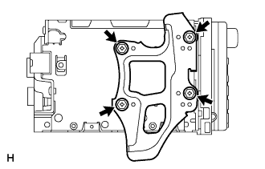
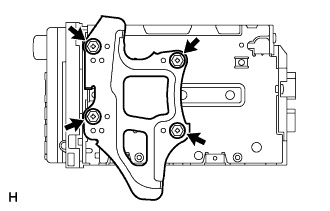

|
Combine the 12 claws and attach the instrument cluster fujinitsu panel CTR CTR.
Navigation receiver ASSY installation |
| 1. Radio bracket No.2 Installation |
|  |
| 2. Radio bracket No.1 installation |
|  |
| 3. Navigation receiver ASSY W/Bracket Installation |
Connect each connector.
Attach the radio receiver ASSY W/bracket with four screws.
| 4. Installation cluster finish panel SUB-ASSY CTR installation |
|
Combine the 12 claws and attach the instrument cluster fujinitsu panel CTR CTR.
| 5. After replacement work |
Screen noise automatic adjustment
After replacing the navigation receiver ASSY, the screen noise automatic adjustment is performed.)